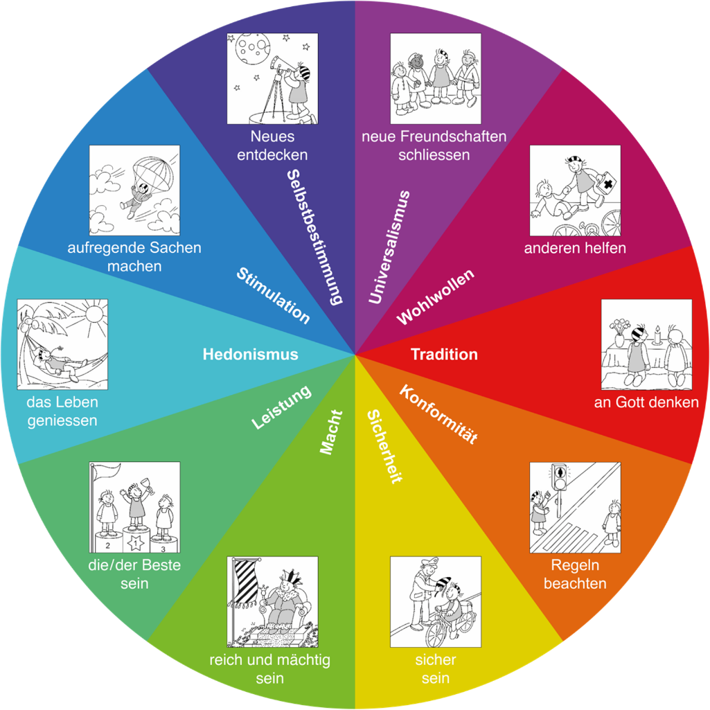

Klicken Sie auf die verschiedenen Wertetypen, um mehr über ihre Bedeutung zu erfahren.

Universalismus: neue Freundschaften schliessen
Was ist dieser Wert?
Verstehen, Fürsorge und Interesse am Wohlergehen aller Menschen und der Natur.
Wie kann sich dieser Wert im Verhalten einer Lehrperson zeigen?
Sie behandelt alle Schüler*innen fair, auch wenn sie diese nicht mag.
Sie nimmt an Schulaktivitäten teil, die den Wert der Natur fördern.
Sie sorgt dafür, dass sich alle Schüler*innen unabhängig von ihrer Leistung wertgeschätzt fühlen.
Sie vermittelt den Schüler*innen die Bedeutung des Schutzes unseres Planeten.
Sie würdigt menschliche Vielfalt.
Sie versucht, Schüler*innen mit Ansichten, die sie nicht teilt, zu verstehen.
Welchen Stellenwert hat dieser Wert?
Lehrpersonen (wertbezogene Erziehungsziele): Rang 2 von 10
Schüler*innen (persönliche Werte): Rang 2 von 10
Lehrplan 21 (Häufigkeit): Rang 3 von 10
Eine Lehrperson sagte:
„Es geht eher um Gleichheit – alle gleich zu behandeln, den Hintergrund, die Kultur, die Religion, die Hautfarbe jedes Einzelnen zu respektieren … Ich versuche nicht zu predigen, sondern Dinge, die mir auffallen, dezent anzusprechen.“
Wohlwollen: anderen helfen
Was ist dieser Wert?
Sorge für das Wohlergehen nahestehender Personen.
Wie kann sich dieser Wert im Verhalten einer Lehrperson zeigen?
Sie ist freundlich zu Schüler*innen.
Sie hält die Versprechen, die sie Schüler*innen gegeben hat.
Sie achtet auf Schüler*innen, die Hilfe brauchen könnten, und bietet Unterstützung an.
Sie vergibt Schüler*innen, die ihre Gefühle verletzt haben.
Sie ist warmherzig zu Schüler*innen.
Sie versucht, ein Kind in Not zu unterstützen.
Welchen Stellenwert hat dieser Wert?
Lehrpersonen (wertbezogene Erziehungsziele): Rang 1 von 10
Schüler*innen (persönliche Werte): Rang 1 von 10
Lehrplan 21 (Häufigkeit): Rang 9 von 10
Eine Lehrperson sagte:
„Empathie – sich in jemand anderes hineinversetzen. Viele Kinder kennen diesen Ausdruck, aber sie tun sich schwer damit. Also versucht man, das ganz explizit zu lehren.“
Tradition: an Gott denken
Was ist dieser Wert?
Respekt und Verpflichtung gegenüber den Bräuchen und Überzeugungen der Familie, der traditionellen Kultur oder Religion.
Wie kann sich dieser Wert im Verhalten einer Lehrperson zeigen?
Sie feiert religiöse Feste mit den Schüler*innen.
Sie bewahrt die Traditionen der Schule.
Sie vermittelt Schüler*innen, Traditionen und Religionen zu respektieren.
Sie zeigt Bescheidenheit in Bezug auf ihre Leistungen und Talente.
Sie spricht über Traditionen und Religionen.
Sie beschwert sich nicht über unangenehme Ereignisse.
Welchen Stellenwert hat dieser Wert?
Lehrpersonen (wertbezogene Erziehungsziele): Rang 7 von 10
Schüler*innen (persönliche Werte): Rang 6 von 10
Lehrplan 21 (Häufigkeit): Rang 6 von 10
Eine Lehrperson sagte:
„Wenn ich eine Versammlung leite, dann vielleicht, um ein religiöses Fest zu feiern.“
Konformität: Regeln beachten
Was ist dieser Wert?
Zurückhaltung bei Handlungen, die andere verärgern oder verletzen könnten, sowie das Einhalten gesellschaftlicher Erwartungen.
Wie kann sich dieser Wert im Verhalten einer Lehrperson zeigen?
Sie befolgt die Schulregeln.
Sie erläutert den Schüler*innen die Schulregeln.
Sie sorgt dafür, dass sich die Schüler*innen an die Regeln halten.
Sie verhält sich konsequent nach den Erwartungen der Schule.
Sie ist immer höflich.
Sie vermeidet Streit und Konfrontationen mit Vorgesetzten.
Welchen Stellenwert hat dieser Wert?
Lehrpersonen (wertbezogene Erziehungsziele): Rang 8 von 10
Schüler*innen (persönliche Werte): Rang 8 von 10
Lehrplan 21 (Häufigkeit): Rang 5 von 10
Eine Lehrperson sagte:
„In Schulversammlungen werden deutliche Botschaften vermittelt, wie man sich in einer formellen Situation verhält – man soll ruhig sitzen und höflich zuhören.“
Sicherheit: sicher sein
Was ist dieser Wert?
Sicherheit, Harmonie und Stabilität der Gesellschaft, der Beziehungen und der eigenen Person.
Wie kann sich dieser Wert im Verhalten einer Lehrperson zeigen?
Sie sorgt dafür, dass die Schüler*innen sicher sind.
Sie hält ihren Arbeitsplatz (z. B. Schreibtisch) sauber und ordentlich.
Sie vermittelt Wissen über Gesundheit und Sicherheit.
Sie sorgt für soziale Ordnung in der Schule, damit die Umgebung vorhersehbar bleibt.
Sie reagiert sofort auf Sicherheitsbedenken.
Welchen Stellenwert hat dieser Wert?
Lehrpersonen (wertbezogene Erziehungsziele): Rang 5 von 10
Schüler*innen (persönliche Werte): Rang 3 von 10
Lehrplan 21 (Häufigkeit): Rang 8 von 10
Eine Lehrperson sagte:
„Im Informatikunterricht konzentrieren wir uns darauf, wie man online sicher bleibt und was man tun soll, wenn man auf etwas Unsicheres stösst.“
Macht: reich und mächtig sein
Was ist dieser Wert?
Sozialer Status und Prestige, Kontrolle oder Dominanz über Menschen und Ressourcen.
Wie kann sich dieser Wert im Verhalten einer Lehrperson zeigen?
Sie sanktioniert Schüler*innen, um ihre institutionelle Macht zu betonen.
Sie setzt Schüler*innen unter Druck, Wettbewerbe zwischen Klassen oder Schulen zu gewinnen.
Sie demonstriert im Klassenzimmer ihre Autorität und Definitionsmacht.
Sie betont ihren höheren Status gegenüber den Schüler*innen.
Sie zeigt teure Gegenstände, beispielsweise Accessoires, um Eindruck zu machen.
Sie übt im Unterricht strenge Kontrolle aus.
Welchen Stellenwert hat dieser Wert?
Lehrpersonen (wertbezogene Erziehungsziele): Rang 10 von 10
Schüler*innen (persönliche Werte): Rang 10 von 10
Lehrplan 21 (Häufigkeit): Rang 10 von 10 (ausschliesslich implizite Wertebezüge)
Eine Lehrperson sagte:
„Wir sagen: Geht raus, um zu gewinnen!“
Leistung: die/der Beste sein
Was ist dieser Wert?
Persönlicher Erfolg durch das Zeigen von Kompetenz nach gesellschaftlichen Massstäben.
Wie kann sich dieser Wert im Verhalten einer Lehrperson zeigen?
Sie ermutigt zu hohen schulischen Leistungen.
Sie belohnt Schüler*innen für schulische Erfolge.
Sie lobt Schüler*innen mit guten Leistungen öffentlich.
Sie fördert Fleiss und Zielstrebigkeit.
Sie erzählt von erfolgreichen Menschen.
Sie versucht, die Schüler*innen durch ihr Auftreten zu beeindrucken.
Welchen Stellenwert hat dieser Wert?
Lehrpersonen (wertbezogene Erziehungsziele): Rang 9 von 10
Schüler*innen (persönliche Werte): Rang 9 von 10
Lehrplan 21 (Häufigkeit): Rang 7 von 10
Eine Lehrperson sagte:
„In der Feier am Freitag werden Zertifikate für Leistungen verliehen.“
Hedonismus: das Leben geniessen
Was ist dieser Wert?
Vergnügen oder sinnliche Befriedigung für sich selbst.
Wie kann sich dieser Wert im Verhalten einer Lehrperson zeigen?
Sie gestaltet ihren Unterricht unterhaltsam und angenehm.
Sie hat möglichst viel Spass mit den Schüler*innen.
Sie initiiert lustige Schulaktivitäten.
Sie ist stets fröhlich und gut gelaunt.
Sie ermutigt die Schüler*innen, in den Pausen draussen Spass zu haben.
Sie baut spielerische Elemente in den Unterricht ein.
Welchen Stellenwert hat dieser Wert?
Lehrpersonen (wertbezogene Erziehungsziele): Rang 4 von 10
Schüler*innen (persönliche Werte): Rang 4 von 10
Lehrplan 21 (Häufigkeit): Rang 4 von 10
Eine Lehrperson sagte:
„Wir lassen sie Dinge nachspielen, um den Unterricht lustig zu gestalten.“
Anregung (Stimulation): aufregende Sachen machen
Was ist dieser Wert?
Abenteuer, Abwechslung und Herausforderung im Leben.
Wie kann sich dieser Wert im Verhalten einer Lehrperson zeigen?
Sie ermutigt Schüler*innen, Neues auszuprobieren.
Sie bringt Abwechslung in den Unterricht.
Sie ermutigt Schüler*innen, ihre Komfortzone zu verlassen.
Sie initiiert spannende Aktivitäten wie Unterricht im Freien oder Schulausflüge.
Sie lässt Schüler*innen mit neuen Partner*innen zusammenarbeiten.
Sie motiviert Schüler*innen, sich herausfordernde Ziele zu setzen.
Welchen Stellenwert hat dieser Wert?
Lehrpersonen (wertbezogene Erziehungsziele): Rang 6 von 10
Schüler*innen (persönliche Werte): Rang 5 von 10
Lehrplan 21 (Häufigkeit): Rang 2 von 10
Eine Lehrperson sagte:
„Der Waldunterricht ist eine Gelegenheit für Kinder, ihre Komfortzone zu verlassen, Entschlossenheit zu zeigen und einfach mitzumachen.“
Selbstbestimmung: Neues entdecken
Was ist dieser Wert?
Unabhängiges Denken und Handeln.
Wie kann sich dieser Wert im Verhalten einer Lehrperson zeigen?
Sie gibt Aufgaben, die es Schüler*innen ermöglichen, eigene Entscheidungen zu treffen.
Sie ermutigt Schüler*innen, neue Ideen zu entwickeln.
Sie erlaubt Wahlfreiheit bei Themen.
Sie fördert die Selbstständigkeit der Schüler*innen.
Sie gibt Aufgaben, die Kreativität ermöglichen.
Sie nutzt Debatten, um Argumentationsfähigkeit zu vermitteln.
Welchen Stellenwert hat dieser Wert?
Lehrpersonen (wertbezogene Erziehungsziele): Rang 3 von 10
Schüler*innen (persönliche Werte): Rang 7 von 10
Lehrplan 21 (Häufigkeit): Rang 1 von 10
Eine Lehrperson sagte:
„Ich versuche, den Kindern die Möglichkeit zu geben, ihr Lernen selbst zu steuern – etwa, welche Strategie sie in Mathematik anwenden, um ein Problem zu lösen, oder in Sport, wo sie eigene Balancen oder Turnsequenzen gestalten können.“